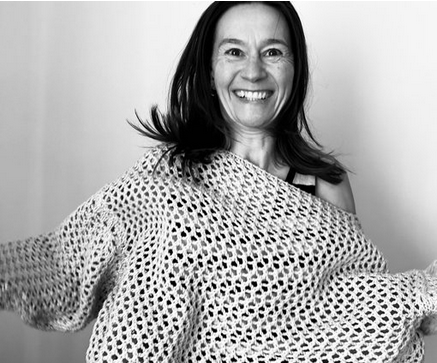
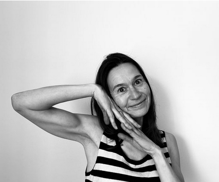

Min vigtigste rolle er at guide dig hjem til dig selv. Fra dette sted navigerer du dig stærkt frem i livet, lander i en dybere ro og får et afklaret, stabilt mindset til at håndtere de udfordringer, du står i nu.
Ring for en gratis og uforpligtende samtale
Det er en kærlig påmindelse om, at du bærer ansvaret for dit liv – og at du har den indre styrke til at ændre det, selvom det er svært. Jeg arbejder målrettet ud fra denne proces:
Når vi forstår vores liv, mønstre og kriser i dybden.
Når vi tager det fulde, ægte ansvar for vores situation.
Når vi bryder gamle rammer og handler på vores sande behov.
Når vi frigør os fra andres overbevisninger og lever indefra og ud.
Et intensivt 3-måneders forløb, der sætter dig på en rejse ind i dig selv. Helt ind til roen, og væk fra stress. Vi arbejder ikke med den klassiske "work/life-balance", for du har kun ét nervesystem, og det er altid med dig.
Vi arbejder utraditionelt, kreativt og intensivt 1 time hver uge i 12 uger:
Vi skræddersyr et 360 graders perspektiv med både stressreducerende og værdiskabende øvelser, der fremtidssikrer dine ressourcer:
Mod nye karriereveje: De sidste uger afsættes til dine karrieremuligheder. Vi gennemgår dit CV/ansøgning, arbejder med jobsøgningens facetter og kortlægger dine unikke talenter.
Sikker tilbagevenden: Vi finder den individuelle vej tilbage, der passer til dig, med en helt ny forståelse for, hvad der stresser dig, og hvilke praktiske ændringer det kræver.
"Hvad end vi sætter i gang, vil jeg skubbe dig ind i andre paradigmer og udfordre din tænkning, så du ikke havner i stress og sygemelding igen."
Den gennemsnitlige ventetid på psykologhjælp i Danmark er i dag kritisk lang. At vente i månedsvis er ikke en passiv handling – det er en periode, hvor stress, angst og fastlåste mønstre risikerer at eskalere, så du mister tilknytningen til dit job eller dit studie.
Du behøver ikke vente på at få det bedre. Lad os bruge ventetiden aktivt.
Mit 12-ugers forløb fungerer som en effektiv, handlingsorienteret bro. Hvor den traditionelle psykolog ofte kigger bagud og behandler klinisk, arbejder vi empirisk, spirituelt og fremadskuende fra dag ét.
Hvad vi opnår i forløbet, mens du venter:
Man kan sagtens arbejde med stressreducerende tiltag uden at have fat i årsagen. Men gør man det, vil mønstret blot gentage sig selv igen og igen i forskellige udgaver på arbejdspladsen eller privat.
Derfor er der et klart link mellem stress og spiritualitet. Når du kommer tættere på dig selv og din indre kerne, stopper du det destruktive mønster. Du begynder på et nyt liv, hvor dit inderste kommer først, og hvor du møder verden autentisk og i balance.
Som clairvoyant linker jeg direkte ind i det ubevidste. Vi finder årsagen hurtigere, hvilket giver os et uvurderligt forspring til at arbejde i dybden.
"En spirituel session hos mig er begyndelsen på en ny matrix. Et startskud mod et nyt paradigme, hvor gamle begrænsninger af mønstre, tanker og overbevisninger mister deres tag, så noget nyt kan begynde. Du får de manglende dele, så du igen kan sammensætte dit liv ud fra din indre styrke."

Jeg har to gange rejst mig fra fatale, invaliderende begivenheder og to voldsomme traumer uden at få den hjælp, jeg havde brug for. Jeg har brugt mange år på at forstå den fysiologiske og psykologiske kontekst i traumer og belastninger. Jeg kender derfor kernen til transformation indefra.
Jeg er født sansestærk med naturlige spirituelle evner. Evner, der blev yderligere skærpet med en nærdødsoplevelse i 2015, hvor jeg mødte eksistensen i den ikke-fysiske verden. I 2024 valgte jeg at formalisere disse evner via clairvoyance-uddannelsen hos medie Renée Jagd.
Jeg er desuden uddannet traumeterapeut og elsker videnskabelig data. Jeg ser mig selv som en brobygger mellem to verdener, der egentlig vil det samme, men blot ikke altid forstår hinandens sprog. Min tilgang er helt igennem empirisk — Menneske til Menneske, Erfaring til Erfaring.
"Det ubekendte er ikke tomt, det er fyldt med værdier og varme for en bedre verden. Det er et levende sted, hvor transformation er velkommen, hvor visioner viser vejen."
— Fra bogen 'Posttraumatisk Vækst' ISBN: 978-8-7430-8912-4
Autenticitet kræver, at vi forventningsafstemmer fuldstændigt. Jeg arbejder udelukkende med motiverede mennesker, der er klar til reel forandring.
Transformation sker ikke gennem perfekte facader, men gennem ægte møder, mod og tillid.
"Jeg kom med massiv stress og følelsen af at have mistet mig selv fuldstændigt. For første gang oplevede jeg et menneske, der så igennem alt støjen og hjalp mig tilbage til roen."
"Ninka arbejder på en måde, jeg aldrig har oplevet før. Ikke bare terapi — men en dyb forståelse af hvorfor jeg sad fast i de samme mønstre igen og igen."
"Ninka er yderst kompetent, og gennemgående et rart menneske som vækker tillid. En tillid som er essentiel for at kunne åbne sig. Jeg er sikker på, at jeg ikke ville være hvor jeg er i dag, hvis ikke jeg havde været i forløb hos Ninka"
Det første skridt på Heltens Rejse handler om tillid og kemi. Ring direkte for en gratis og uforpligtende samtale, eller find en tid i kalenderen, der passer dig, til en 15-minutters afklaring på telefonen.